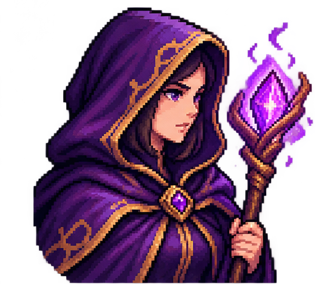

🌲 Bosque de los límites · Niveles 1–4
Dificultad inicial. Resolver límites mediante sustitución directa; evaluar funciones lineales y cuadráticas; aplicar operaciones algebraicas sencillas y propiedades básicas de los límites.
UNA AVENTURA MATEMÁTICA
CRÓNICAS DEL REINO INFINITO
Elige tu mundo y prepara a tu aventurero.
Campaña: Reino Infinito · Personaje: Maga del Conocimiento
HACIA EL LÍMITE · PRÓLOGO

Tu aventura comienza ahora. El destino del Reino Infinito está en tus manos.
TU HISTORIA COMIENZA AQUÍ
Recorre el reino, supera los desafíos y domina el cálculo diferencial.
Dificultad inicial. Resolver límites mediante sustitución directa; evaluar funciones lineales y cuadráticas; aplicar operaciones algebraicas sencillas y propiedades básicas de los límites.
Dificultad intermedia. Resolver límites por factorización y simplificación; trabajar con indeterminaciones como 0/0; calcular límites cuando la variable tiende al infinito y analizar expresiones racionales.
Dificultad avanzada. Calcular derivadas con reglas básicas; estudiar continuidad y discontinuidades; resolver ejercicios combinados que integran límites, factorización, continuidad y derivación.